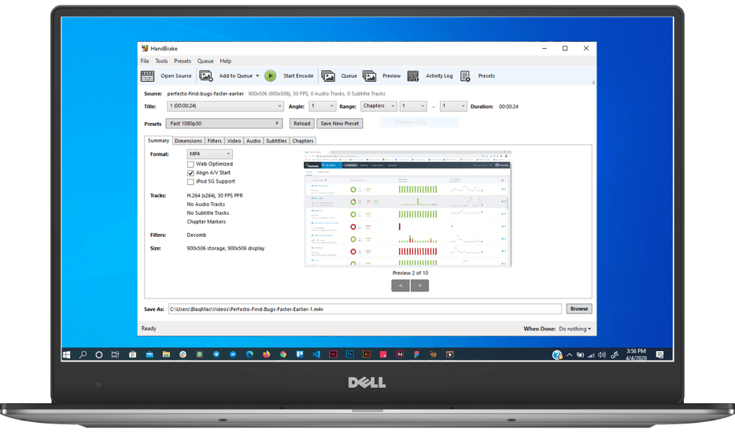

Handbrake
The open source video transcoder
HandBrake is a tool for converting video from nearly any format to a selection of modern, widely supported codecs

HandBrake is a tool for converting video from nearly any format to a selection of modern, widely supported codecs
Convert video from nearly any format
Free and Open Source video converter
Multi - Platform desktop application
Get started with HandBrake in seconds by choosing a profile optimised for your device, or choose a universal profile for standard or high quality conversions. Simple, easy, fast. For those that want more choice, tweak many basic and advanced options to improve your encodes.
Handbrake can process most common multimedia files and any DVD or BluRay sources that do not contain any kind of copy protection.
Most of HandBrake's source code is covered by the GNU General Public License, version 2. A copy of which is included with every release in the COPYING file. Portions are covered under BSD 3 Clause
HandBrake uses a lot of (L)GPL or BSD licensed libraries:
A list of these is available here.
Thank their authors!